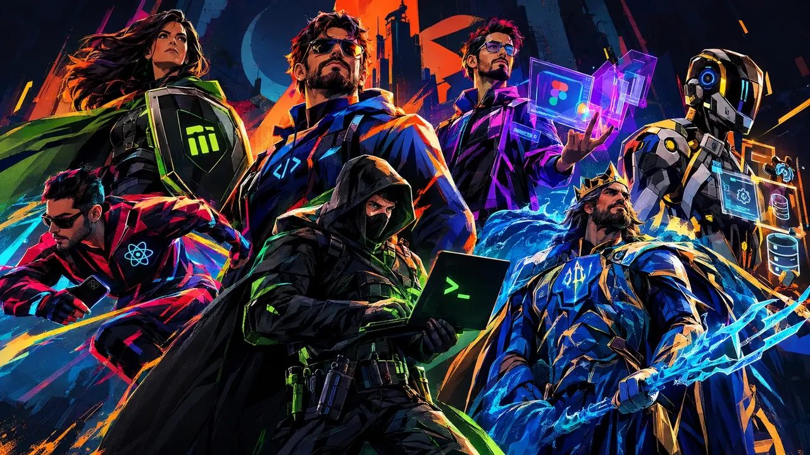
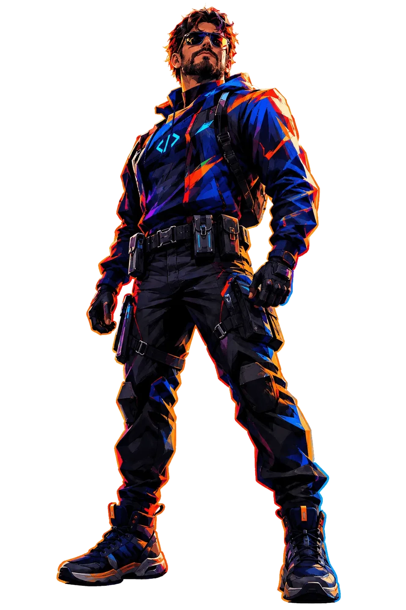
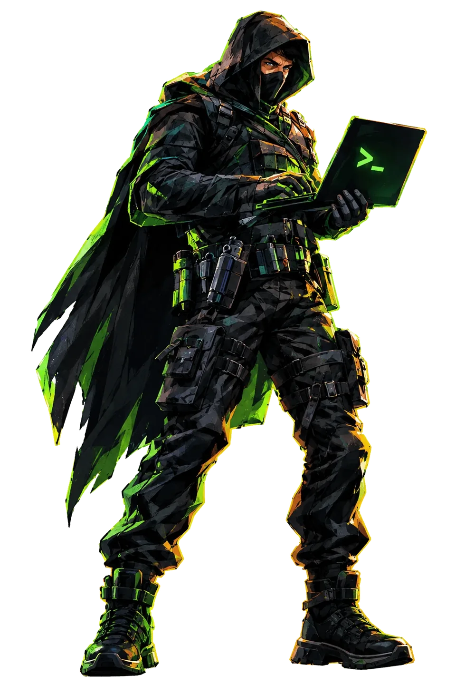
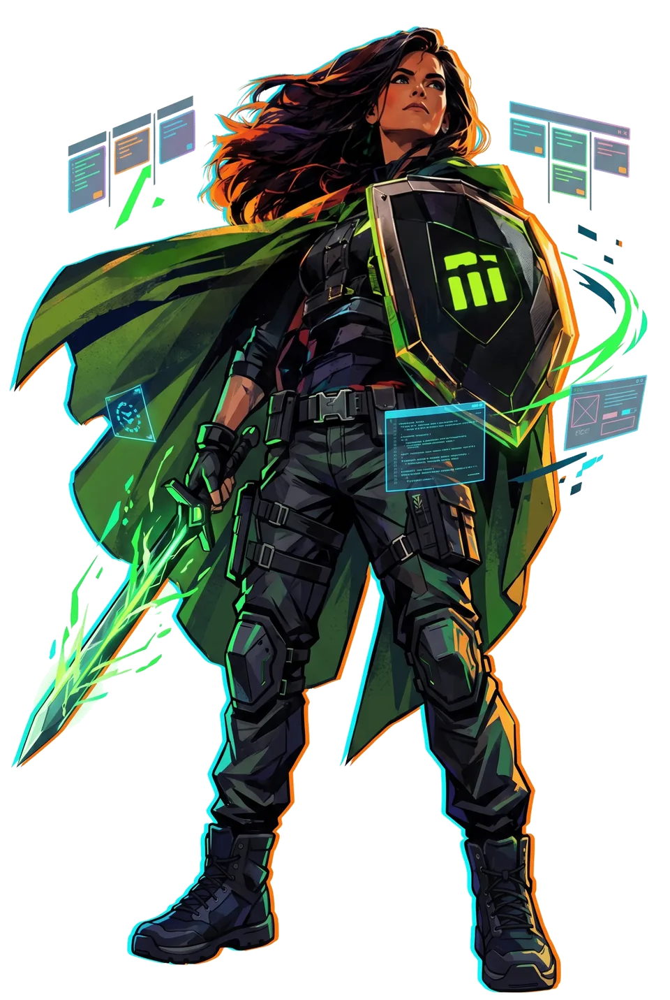
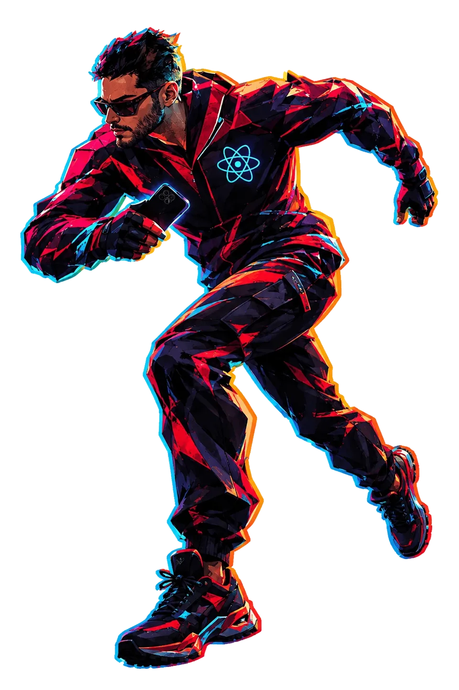
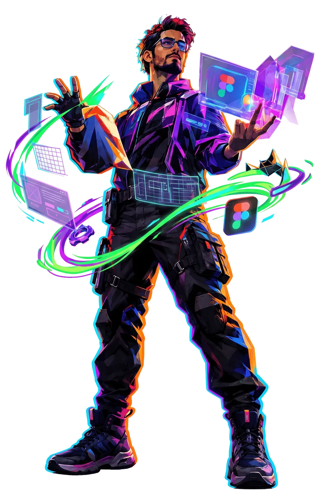
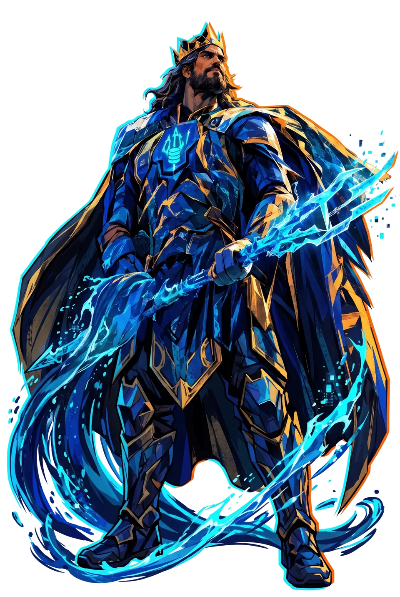
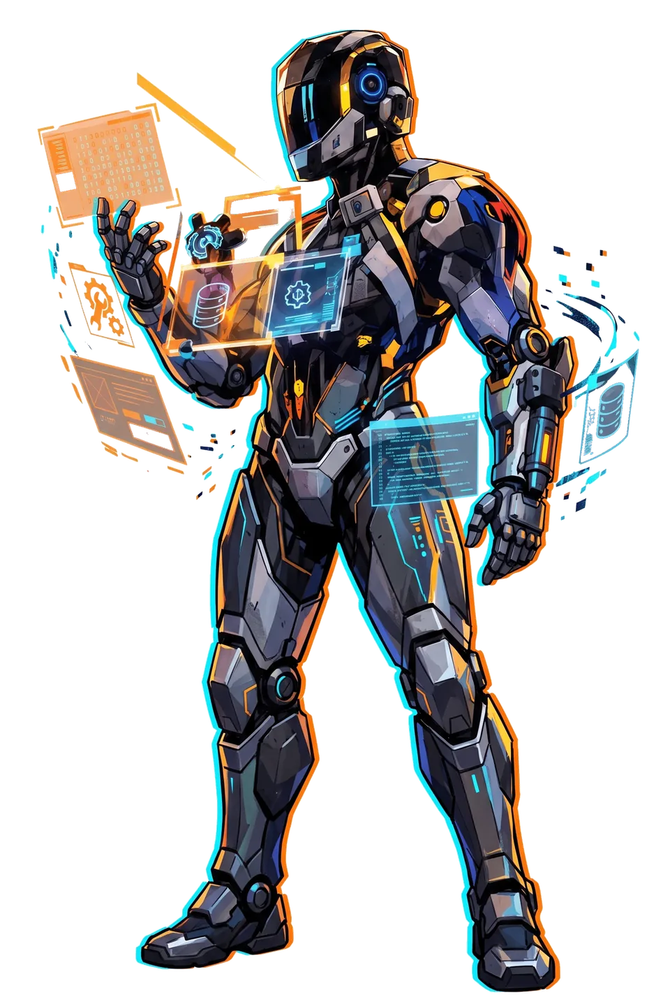

status: PRODUCTION DOWN
A Sociedade da Justiça Ágil
Quando o sistema cai às 2 da manhã de uma sexta-feira, é este grupo que recebe o chamado.
CONHEÇA A LIGA
01/07
SUPER-STACK
O líder
Full-Stack Sênior
O herói Full-Stack Sênior. Veio de um planeta distante chamado “Vale do Silício” e foi criado por um casal humilde no interior de um repositório Open Source. Ele voa pelas camadas da aplicação, desde a manipulação de ponteiros na memória até o CSS perfeitamente centralizado. Consegue sustentar uma arquitetura monolítica inteira sozinho nas costas.
- PODERES
- Visão de raio-x para debugar código alheio.
- Sopro congelante para esfriar servidores superaquecidos.
- FRAQUEZA
- Código legado em Cobol ou PHP 4 sem nenhum comentário. A proximidade o faz perder as forças e a vontade de viver.
- RAIO-X96
- VOO91
- SOPRO88

02/07
BASHMAN
O cavaleiro sombrio do terminal
DevOps & SysAdmin
O Engenheiro DevOps e SysAdmin. Ele não tem superpoderes genéticos (não costuma codar um app do zero), mas é o herói mais preparado da equipe. Trabalha exclusivamente nas sombras do Dark Mode e resolve crimes de infraestrutura usando apenas a linha de comando.
- ARMAS
- Um “cinto de utilidades” infinito contendo scripts Bash, contêineres Docker de emergência e instâncias da AWS prontas para escalar.
- MAIOR INIMIGO
- O “Palhaço” do “Na minha máquina funciona”.
- BASH98
- DOCKER93
- AWS90

03/07
MULHER-AGILE
A super poderosa
Product Manager
A Product Manager (PM) e guardiã da metodologia. Uma guerreira amazona nascida na ilha paradisíaca do Kanban. Ela traz ordem ao caos do desenvolvimento e mantém a paz entre a tribo dos Desenvolvedores e o império dos Stakeholders.
- ARMAS
- O escudo da Blindagem, que repele pedidos de “features de última hora” do cliente, e a espada da Verdade, usada durante as reuniões de Daily para forçar o dev a confessar se a task realmente está “99% pronta”.
- BLINDAGEM94
- VERDADE99
- KANBAN97
daily.standup “tá 99% pronta?”
99% 63% pronta — espada da Verdade aplicada

04/07
THE CACHE
O velocista
Front-End Mobile
O Desenvolvedor Front-End Mobile. O homem mais rápido do mundo na renderização de interfaces. Após ser atingido por um raio de otimização de performance, ele ganhou a habilidade de manipular o DOM e renderizar componentes em milissegundos cruzando as barreiras do React Native e do Expo.
- PODERES
- Velocidade de raciocínio extremo e a capacidade de realizar o Hot Reload no aplicativo antes mesmo de você terminar de piscar.
- FRAQUEZA
- Fica paralisado se o cliente usar uma internet 3G no interior.
- VELOCIDADE99
- HOT RELOAD96
- INTERNET 3G8
Aviso: 3G igual a perigo

05/07
INTERFACE
Guardião do design intergaláctico
UI/UX Designer
O Designer UI/UX e Mestre de Interfaces. Integrante da tropa intergaláctica dos Criativos, ele usa um anel energizado pela pura força de vontade e cafeína para materializar qualquer estrutura imaginável.
- PODERES
- Capacidade de criar construtos visuais complexos e animações fluidas do nada absoluto, projetando mundos interativos inteiros usando a energia verde do Three.js e as dobras espaciais do GSAP.
- FRAQUEZA
- O medo primitivo de ouvir a frase: “Você pode aumentar um pouquinho a logo?”
- CRIAÇÃO95
- CAFEÍNA98
- PACIÊNCIA COM LOGO6

06/07
DATAMAN
O mestre dos datalakes e oceanos de dados
DBA & Eng. de Dados
O DBA (Administrador de Banco de Dados) e Engenheiro de Dados. Governante dos sete mares de informações não estruturadas e guardião das chaves primárias. Muitos o subestimam até precisarem de um JOIN complexo de 15 tabelas.
- PODERES
- Telepatia direta com clusters de servidores e a capacidade de comandar cardumes de tabelas do SQLite com perfeição.
- ARMA
- O Tridente da Query Otimizada, capaz de atravessar o gargalo de I/O mais denso.
- JOIN97
- TELEPATIA92
- I/O89

07/07
O AUTÔMATO
Homem máquina
RPA & Automação
O Engenheiro de RPA e Automação. Ele sofreu um acidente trágico com tarefas manuais repetitivas e teve que ser reconstruído fundindo seu corpo diretamente com a Matrix do sistema. Metade homem, metade rotina programada.
- PODERES
- Consegue construir softwares de desktop imponentes em C# WPF apenas com o pensamento e utiliza o canhão de plasma do Playwright para navegar e extrair informações da web de forma autônoma, destruindo tarefas burocráticas instantaneamente.
- AUTOMAÇÃO99
- C# WPF94
- PLAYWRIGHT96
12.847 tarefas manuais destruídas